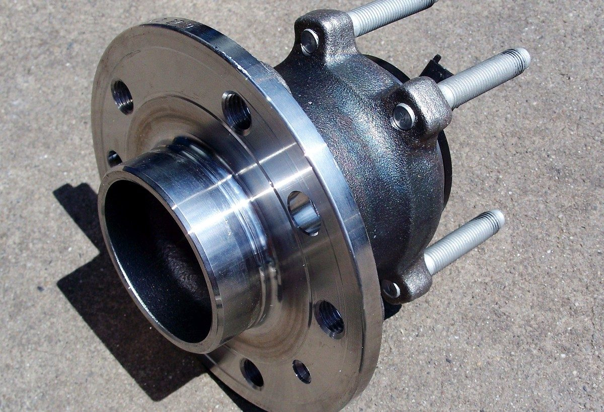

От детали — к технологии и оборудованию
Выберите отрасль и деталь, близкую к вашей задаче. Посмотрите маршрут обработки, ключевые операции и оборудование для каждого этапа — чтобы быстрее сформировать решение под своё производство.
Автомобильная промышленность
Ступицы, суппорта, рычаги подвески→Авиационная промышленность
Корпусные детали и кронштейны агрегатов→Судостроение
Гребные валы, фланцы, корпусные узлы→Железнодорожное машиностроение
Буксы, корпуса редукторов, крепёжные узлы→Сельскохозяйственное и дорожно-строительное машиностроение
Корпуса редукторов и валы навесного оборудования→Приборостроение
Точные корпуса приборов малыми сериями→Топливно-энергетический сектор
Фланцы, корпуса арматуры, детали насосов→Горнорудная промышленность
Износостойкие детали и корпуса редукторов→Космическая промышленность
Точные корпусные детали из лёгких сплавов→Как пользоваться разделом
Найдите задачу, близкую к вашей.
Выберите отрасль
Откройте направление, соответствующее вашему производству.
Найдите аналогичную деталь
Используйте типовой пример как отправную точку для своей задачи.
Изучите маршрут обработки
Посмотрите последовательность операций и требования к каждому этапу.
Подберите оборудование
Перейдите к категориям и моделям станков, подходящим для технологии.

Не просто перечень станков — готовая логика производства
Как формируется решение под вашу деталь
При подборе оборудования инженеры учитывают геометрию детали, материал заготовки, допуски, шероховатость, количество установов, производственную программу и требования к длительности цикла. На основании этих данных формируется конфигурация оборудования и состав проекта.
Что получает заказчик
Частые вопросы
Да, типовое решение — хорошая отправная точка. Маршрут обработки и состав оборудования уточняются под конкретную деталь: материал, допуски и объём выпуска могут отличаться.
Чертёж детали, материал заготовки, требования к точности и шероховатости, количество установов и производственная программа.
Да, если позволяет геометрия детали и объём выпуска — например, обрабатывающий центр с несколькими осями способен заменить несколько последовательных операций.
Основное оборудование выполняет ключевые операции по чертежу, дополнительное — вспомогательные: заготовительные, финишные или контрольные.
Возможность тестовой обработки определяется для конкретной модели оборудования и производственной задачи.
Да, часть моделей доступна на складе — актуальные позиции представлены в разделе «Станки в наличии».
Не нашли подходящую деталь?
Передайте чертёж и требования к производительности. Технолог Механита разработает маршрут обработки и подберёт оборудование под вашу задачу.
Предварительный анализ — без оплаты.